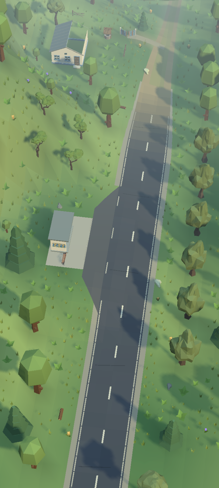
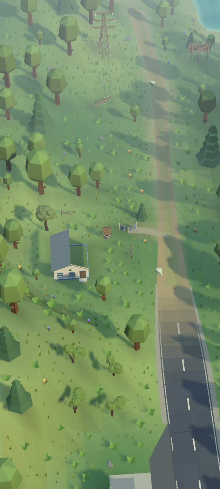
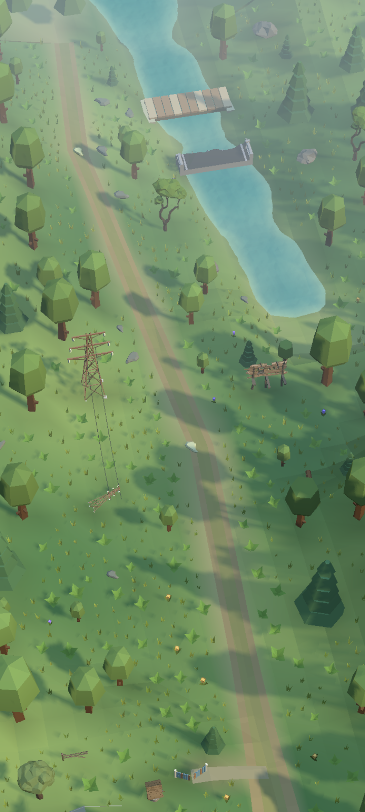
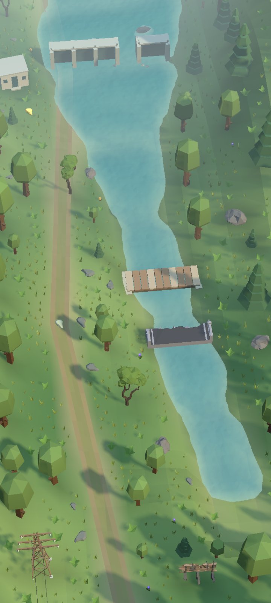

QC001 · Остання зупинка


Перероблена гребля малого ставка, садиба з обваленим краєм даху, проста криниця, замкнена огорожа й ворота. Зношений асфальт, менш регулярні посадки та плавне освітлення землі поєднують п’ять місць.
Початкові кадри — 2026-10-10T19:32:29.9802200Z. Поточні кадри містять всю сукупність змін. Однакові камера, сонце та профілі якості; дата нової зйомки записана в receipt.








Частинки перевіряються окремим кадром на чорному тлі в Game View: пилок, через дві секунди, reduced motion. Це діагностичні кадри без решти геометрії.